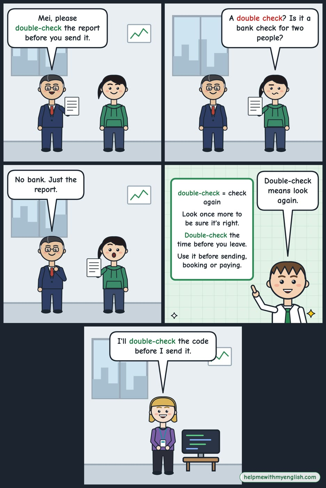

double-check
To check something a second time to be sure it is right.
Please double-check the time before you leave.
Tip: Use it as a verb with an object (double-check the details); the noun or adjective form is written 'double-check' or 'double-checked', and it's not used for checking a different thing.
Hear it in conversation
Workbook
1. What does it mean?
In this conversation, what does "double-check" mean?
2. Fill the gap
Before you book the flight, the dates on your passport and the ticket.
3. Choose the best reply
Amira: I'm about to submit my application. Is everything okay?
4. Your turn: speak
Tell me about a time when you were glad you checked something carefully before doing it.
Show an example answer
Last year I was travelling to a conference, and I almost went to the wrong airport. Luckily, I decided to double-check my booking the night before and saw the mistake. It saved me a lot of stress, and now I always check my travel details twice.
Answer key: double-check
- 1. D. To look at something again to make sure it is correct
- 2. double-check
- 3. C. Let me double-check the form for mistakes first.
- 4. Example: Last year I was travelling to a conference, and I almost went to the wrong airport. Luckily, I decided to double-check my booking the night before and saw the mistake. It saved me a lot of stress, and now I always check my travel details twice.
See it in a comic
